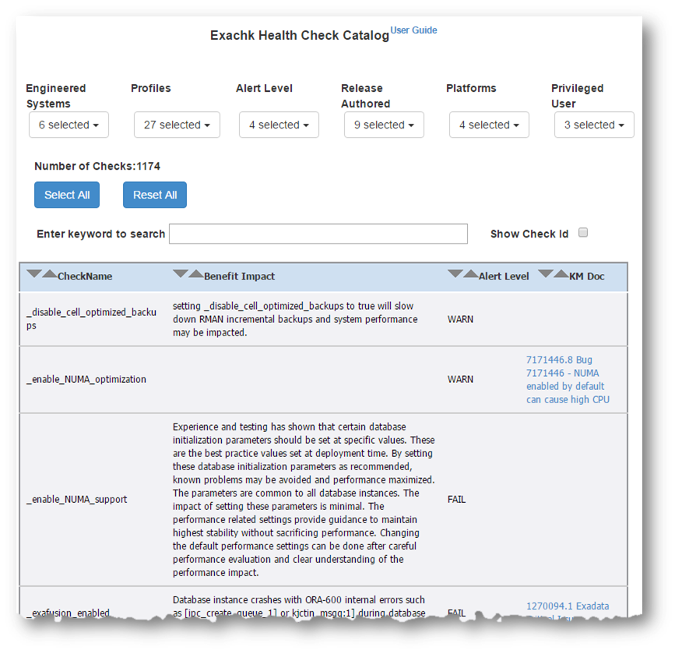

1.6 Health Check Catalog
The Health Check Catalogs list the health checks that are included within Oracle ORAchk or Oracle EXAchk.
Health Check Catalogs are HTML pages that require JavaScript. Enable JavaScript in your browser to view the Health Check Catalogs.
Each tool has its own Health Check Catalog. Refer to My Oracle Support Note 1268927.2.
As well as being available at the above links, Health Check Catalogs are also available in the download install zip (orachk.zip, orachk_idm.zip, or exachk.zip) file to view them offline in environments with no internet connection.
Each of the respective Health Check Catalogs is called:
-
ORAchk_Health_Check_Catalog.html -
EXAchk_Health_Check_Catalog.html
For each check, the Health Check Catalogs display:
-
Name of the check
-
Benefit and impact of the check
-
Alert level of the check
-
Links to any My Oracle Support Notes or other documentation linked from the check
Checks can be filtered by various attributes:
Table 1-5 Health Check Filters
| Filter | Description |
|---|---|
|
|
Oracle ORAchk Only: Filters checks by the product area to which they apply. |
|
|
Oracle EXAchk Only: Filters checks by the engineered system to which they apply. |
|
|
Filters checks by the profile to which they apply. |
|
|
Filters checks by the Alert Level of the check, |
|
|
Filters checks by the Oracle ORAchk or Oracle EXAchk release in which they first published. |
|
|
Filters checks by platform. |
|
|
Filters checks that require specific privileged user roles, such as root. |
You can also filter checks based on searching for checks containing particular text.
Example 1-20 Health Check Catalog
Oracle ORAchk Health Check Catalog:
Figure 1-26 Oracle ORAchk Health Check Catalog

Description of "Figure 1-26 Oracle ORAchk Health Check Catalog"
Oracle EXAchk Health Check Catalog:
Figure 1-27 Oracle EXAchk Health Check Catalog
Description of "Figure 1-27 Oracle EXAchk Health Check Catalog"
Using the Health Check Catalog, you can find the Check Id for a particular check without running a health check report.
To view the check Id, select the Show Check Id check box.
The catalog displays the Check Id field to the left of each the checks.